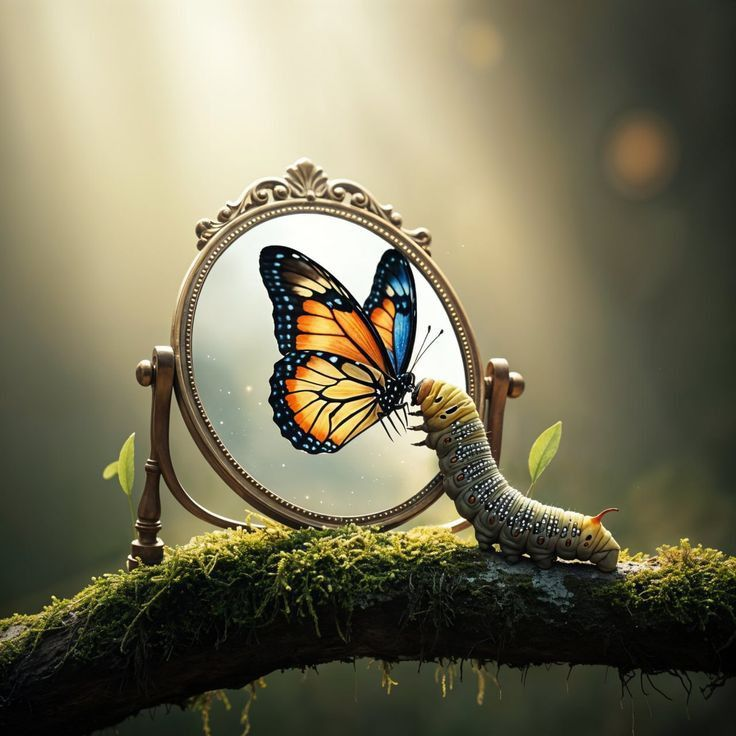

Most people don't know when they've already begun.
You’ve already begun just by being here.
Pick how you want to meet TPS…
🌿
Scenic
Normal
→
— our choice matters the most

Beginnings rarely look like beginnings.
Z
Z
Z